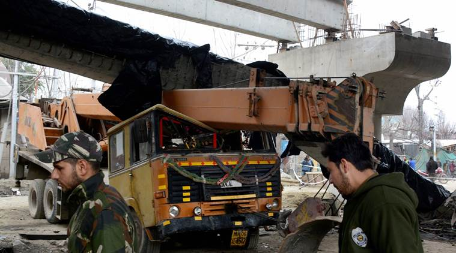

6.1 magnitude earthquake rocks Afghanistan, tremors felt in India, Pakistan; one feared dead
Earthquake in Afghanistan, india, pakistan Earthquake in Afghanistan:
Tremors were felt for more than a minute in parts of Delhi NCR.
At least one child was killed and 19 others injured after tremors were felt in parts of Pakistan on Wednesday after an earthquake struck Afghanistan. Mild tremors were also felt in Srinagar and the national capital New Delhi.
The US Geological Survey (USGS) reported that the magnitude of the earthquake was 6.1 and the epicentre was in the Hindu Kush region. The quake hit at 0707 GMT (1237 IST) near Afghanistan’s northern border with Tajikistan in the Hindu Kush mountains at a depth of 191 kilometres, the US Geological Survey said. There were no immediate reports of any damage or casualties.
The tremors in the national capital region lasted for well over a minute. Reports from Srinagar said the tremors were intensive and people were seen coming out of their offices and homes soon after. Similar scenes were witnessed in Noida, Ghaziabad, Gurgaon and New Delhi.
Earthquake in Afghanistan, india, pakistan Srinagar: Police personnel inspect a girder of the under-construction Jehangir Chowk-Rambagh flyover that collapsed after a 6.1 magnitude earthquake hit Srinagar on Wednesday.

Earthquake in india, Srinagar:
“Earthquake of magnitude 6.2 occurred in Hindu Kush region of Afghanistan, it had a depth of over 190 km and hence was felt in Delhi and quite strongly in Kashmir also,” VK Gehlot, Director, National Center for Seismology told news agency ANI.
Explained: Why today’s earthquake – 1,200 km away – was felt in Delhi
Across the border in Pakistan, homes, offices and schools were quickly evacuated in Islamabad, Peshawar and Lahore. Deputy Commissioner Shabir Mengal said they were also incidents in other parts of Quetta where around a dozen people were injured due to building damages or collapses. “The injured have been rushed to a nearby hospital for treatment. Emergency has been declared in all hospitals,” he said.
In Kabul, at least two heavy tremors were felt – which sent people running out on the streets. No casualties were immediately reported in Afghanistan. Afghanistan is frequently hit by earthquakes, especially in the Hindu Kush mountain range, which lies near the junction of the Eurasian and Indian tectonic plates